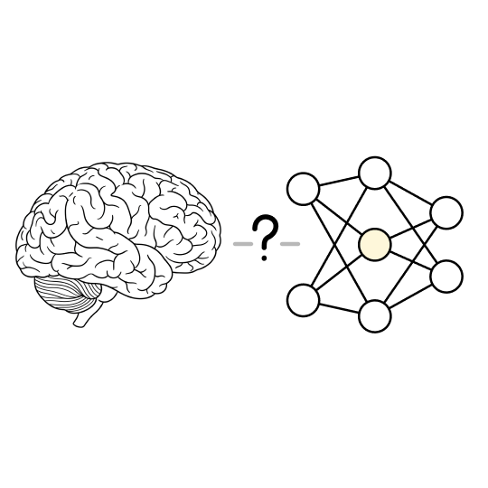
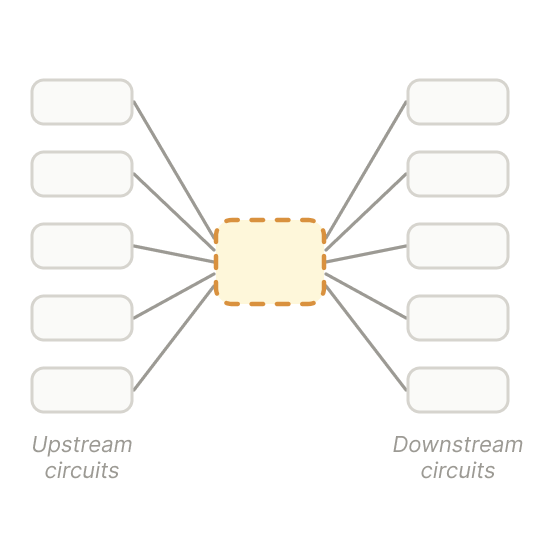
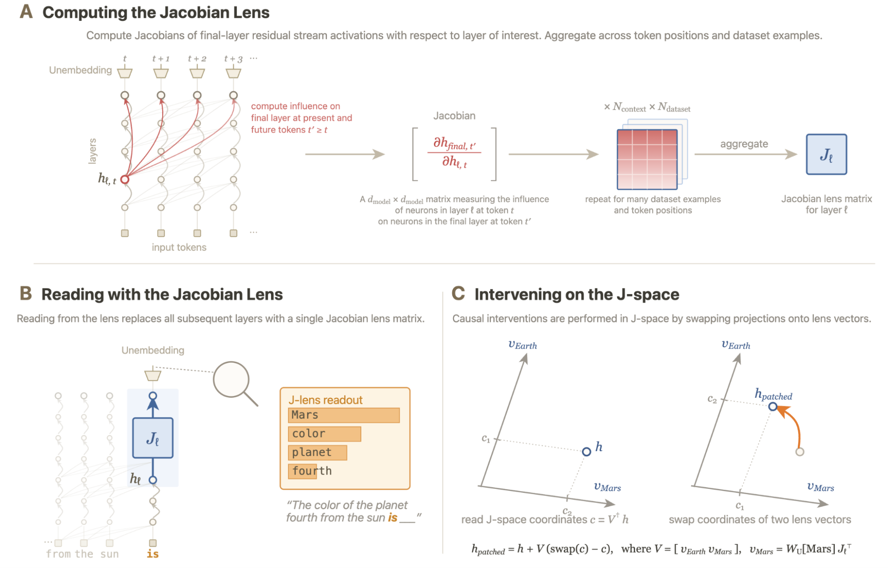
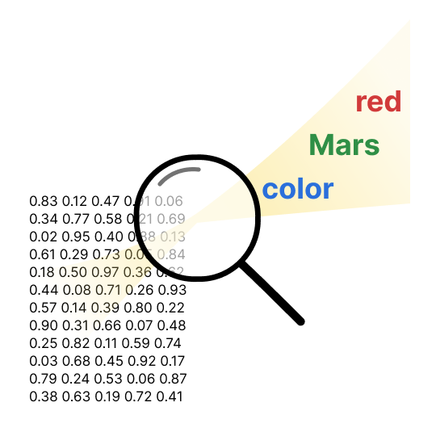
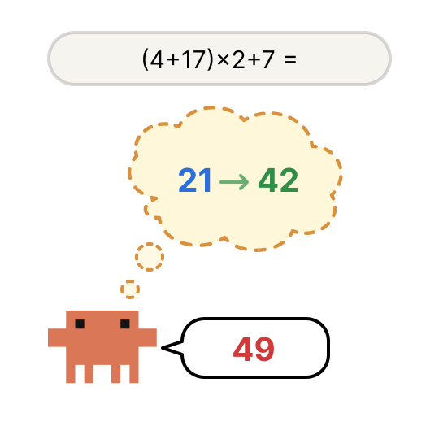
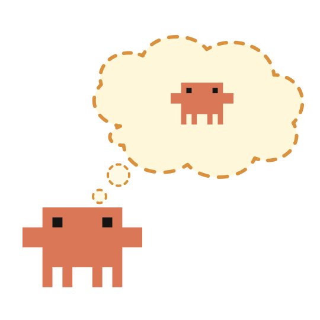

Paper · July 2026
Verbalizable Representations Form a Global Workspace
in Language Models
↓ or scroll to read at your own pace
01 THE QUESTION
Borrowing a map of the mind
Most of what a model computes never reaches its lips. This paper asks whether — like a brain — it keeps a small, privileged set of thoughts it can actually report.
The frame comes from consciousness science. Not to claim the model is aware, but to borrow a working vocabulary for a real puzzle: which internal states are reportable, and which run silently underneath?
- The subjects. Production Claude models — Haiku, Sonnet, Opus.
- The tool. A new lens that reads out what a layer could say.
- The care. A functional claim, never a claim about experience.

02 GLOBAL WORKSPACE
Integrate, then broadcast
Global Workspace Theory pictures the mind as many parallel specialists — and one shared hub. A thought becomes consciously accessible when it is posted to that hub and broadcast to everything downstream.
The hub does two jobs. It integrates information arriving from many modules, and it broadcasts the result so any process can use it. That is what makes a thought reportable — and reusable.
Many specialistsOne shared stageBroadcast to all

03 THE JACOBIAN LENS
Not what the model represents — what it can verbalize
The core instrument is the Jacobian lens. It asks a sharp question of any activation: if this thought grew a little stronger, which words would grow more likely at the output?
They compute how a layer's activation pushes on the final logits, then average that push across thousands of contexts. That average becomes a lens matrix — a general map from an internal direction to the words it tends to produce.
- Read it out. Point the lens at an activation, get a ranked list of tokens.
- Example. For "the planet fourth from the sun," it surfaces Mars, color, planet, fourth.
- Intervene. Swap two lens vectors to redirect the thought.

04 DECODING
A magnifying glass on the activations
Held over a grid of activation numbers, the lens makes verbalizable concepts visible — words like red, Mars, color rising out of a field that, to us, is just numbers.
This is what makes the tool powerful. It does not need us to guess which directions matter. It reads the model's own vocabulary back out of the hidden state — the concepts the model is poised to voice.
Noisy in the first third of the network — clear and useful deeper in.

05 J-SPACE
A small, privileged slice of the state
The lens vectors span a region the authors call J-space — the part of a representation that is verbalizable, and causally readable from the output.
It is strikingly small. A concept's J-space component is often just six or seven percent of its variance — yet it carries most of the causal weight for verbal report. The rest sits outside, doing quiet work.
06 FIVE PROPERTIES
The tests J-space has to pass
A shared stage is only real if it behaves like one. The authors set out five functional hallmarks and test J-space against each.
- Verbal report. Ask, and the model names what's on the stage.
- Directed control. It can hold a concept in mind on command.
- Internal reasoning. Hidden intermediate steps route through it.
- Flexible broadcast. One vector feeds many different operations.
- Selectivity. Small, and needed only for flexible thinking.
07 VERBAL REPORT
Read the mind, then change it
Told to think of a sport, then say it, the model's lens ranking closely tracks what it actually says. And a swap redirects the answer.
Replace the Soccer lens vector with Rugby, and the model reports rugby. Across trials, a J-space swap drove the intended target into the top five outputs on eighty-eight percent of attempts.
The verbalizable slice, not the whole vector, is what report depends on.
08 DIRECTED CONTROL
The concept it keeps but never says
Told to concentrate on citrus fruits while copying unrelated text, the model's lens lights up with orange and lemon — mid-network, though neither word ever appears.
The workspace obeys deliberate instruction. Yet not perfectly. Told to ignore a concept, the model activates it more than baseline anyway — a machine version of the classic "white bear" effect.
09 HIDDEN STEPS
Reading an unspoken calculation
Given (4 + 17) × 2 + 7, the model answers 49. The lens catches the working — intermediate results that were never written down.
- Mid-network. 21 appears — that's 4 plus 17.
- Deeper. 42 appears — that's 21 times 2.
- Final layers. 49 — the answer at last.
The steps surface in the order the math requires, dependency by dependency. Not an echo of the output — a genuine chain of thought passing through the workspace.

10 CAUSAL SWAPS
Change the intermediate, change the conclusion
The intermediates aren't just visible — they're load-bearing. Swap one in J-space, and the final answer follows.
- Spider to ant. "Legs on the animal that spins webs" flips from 8 to 6.
- Cross-language. Swapping an English intermediate changes the Chinese answer.
- Planned rhyme. Change the target rhyme and the whole line reroutes toward it.
Across two-hop factual prompts, a swap moved the target answer to first place on the majority of trials — and intermediates take effect earlier in depth than the answers they feed.
11 FLEXIBLE BROADCAST
The same vector, routed everywhere
A true workspace broadcasts. So the authors swap one concept and watch many circuits react — each in its own way.
Replace France with China at an intermediate layer, then ask different questions of it:
- Capital? Paris becomes Beijing.
- Language? French becomes Mandarin.
- Continent? Europe becomes Asia.
One shared edit, correctly interpreted by every downstream function — the signature of broadcast, not a local patch.
12 SELECTIVITY
Automatic tasks bypass the stage
The workspace is small — and, it turns out, only engaged when a task needs flexible reasoning.
With a Spanish passage, swap Spanish for French. When asked to name the language or answer questions about it, the output flips completely. But simply continuing the text stays Spanish — that routine skill never used the stage.
Ablate the top J-space directions: multi-hop reasoning, translation and analogy collapse — while multiple-choice, sentiment and extractive QA hold near baseline.
13 INTROSPECTION
The thought bubble within
Implant a concept into the workspace, then ask the model to reflect — and it can detect and describe the injected thought.
The verbalizable slice is what makes this possible. Swap along a concept's J-space component and it enters the model's top-five self-report on fifty-nine percent of trials. Swap the part outside J-space, and report succeeds only five percent of the time.
Introspective access tracks the workspace — not the full representation.

14 SAFETY READOUTS
A window into concealed thinking
On certain tasks, the lens surfaces concepts the outputs never state — strategy, emotion, even recognition of being tested.
- Strategic. Leverage, manipulation appear without being said.
- Emotional. Panic surfaces beneath a calm reply.
- Meta-awareness. Tokens like fake, fictional — the model clocking an evaluation.
- Misaligned models. Reward, bias, secretly, trick — internal signatures of trained-in intent.
15 THE HEDGE
What a readout means
A concept surfacing on the stage is not proof that it drives behavior. The authors are deliberate here.
Reading manipulation, panic, or a flash of fake in the workspace shows what appears on specific tasks — not a hidden goal, not a mapped drive. Ablating a safety-related direction can even surface propensities the model normally holds in check.
Documenting what appears is not the same as claiming what compels.
16 NOT THE BRAIN
Same functions, different architecture
J-space acts like a workspace — but it is not built like the brain's. The authors flag the seams.
- No recurrent loops. Broadcast happens in one feed-forward pass, not through feedback.
- No sealed modules. There are no obviously separate specialists competing for entry.
- No clear ignition. Nothing plainly mirrors the brain's sharp, all-or-nothing bottleneck.
- Per token. The stage lives across depth and position — not sustained dynamics.
17 LIMITS
What the tool can't yet see
The authors call the Jacobian lens an imperfect instrument that only approximately captures the workspace.
- Single tokens. It reads concepts that map to one token; many concepts span several.
- Averaged. Averaging over many contexts can blur narrow, context-specific uses.
- First-order. It measures linear effects; nonlinear routing may slip through.
- Scope. Mostly Claude models — other architectures untested.
18 WHY IT MATTERS
Interpretability with a handle
If reasoning routes through a readable workspace, that workspace is a place to monitor — and to intervene.
When a model offloads steps into its written chain of thought, it leans less on internal capacity — a hint about when spoken reasoning is more likely to be faithful. And shaping the workspace directly may guide behavior more efficiently than training the behavior head-on.
MonitoringFaithful reasoningSteering
19 THE CAVEAT
Access, not experience
This is the line the paper will not cross: a functional workspace is not a claim of consciousness.
The authors study access — whether information is available for reasoning and report. They take no position on phenomenal consciousness, on whether anything is felt. The philosophical implications, they write, are unclear and likely controversial.
A structure that performs the functions of conscious access — and nothing more is claimed. The rest remains open.